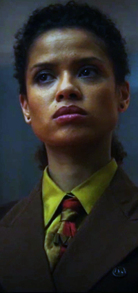

Loki é o filho de Laufey, rei dos Gigantes de Gelo de Jotunheim, um dos Nove Reinos da cosmologia asgardiana. Após ver seu pai, Laufey, sendo assassinado por Odin, Loki ainda uma criança tenta atacar o assassino asgardiano, mas é agredido e levado para ser cuidado como um filho por Odin.
HABILIDADES
Suas habilidades incluem a capacidade de projetar rajadas poderosas energia, gerar campos de força hiper-resistentes, teletransportar-se a outras dimensões, criar ilusões realistas, dar vida a seres inanimados temporariamente, aprimorar os atributos físicos de humanos comuns como os criminosos Cobra e Sandu, sendo capaz de retirar esse poderes no tempo que precisar.
FRASE
“Eu sou um deus, criatura ridícula”
Sylvie Laufeydottir
SOBRE
Sylvie Laufeydottir, nascida Loki Laufeydottir, é uma variante da Loki Laufeyson que causou um evento Nexus quando criança e escapou da Autoridade da Variância do Tempo. Sylvie se escondeu através das linhas do tempo, enquanto buscava vingança contra a TVA e os Time-Keepers.
HABILIDADES
Suas habilidades incluem sua tática estrategista, ótima em combate com e sem armas/espadas, além de saber muitas acrobacias
FRASE
“Roubei um TemPad e fugi por muito tempo, o que foi chato”
Mobius M. Mobius
SOBRE
Mobius M. Mobius é um ex-agente da Autoridade de Variância Temporal que se especializou na investigação e análise de criminosos do tempo particularmente perigosos.
HABILIDADES
Mobius é considerado, mesmo pela Loki, incrivelmente inteligente e conhecedor do tempo e das muitas maneiras que ele pode impactar o passado, presente e futuro. Também investigou várias anomalias temporais, tais como assassinatos e roubos para rastrear e capturar variantes temporais como Loki e tem a humildade de reconhecer que Loki tem um dom para a investigação.
FRASE
“É assim que é, é assim que foi, é assim que vai ser. Tudo para que os outros possam atingir a melhor versão de si mesmos.”
Ravonna Renslayer

SOBRE
Ravonna Lexus Renslayer é uma juiza da Autoridade de Variação de Tempo que supervisionou o TVA em nome de He Who Remains. Nascida Rebecca Tourminet, ela era uma Variante de Tourminet que foi tomada pela TVA e teve suas memórias apagadas, tornando-se Caçadora A-23.
HABILIDADES
Como parte de seu treinamento militar como caçadora da Autoridade da Variância do Tempo, Renslayer tem habilidades de luta impressionantes, tendo um estilo de luta elegante e mínimo. No entanto, ela exibe essas habilidades com menos freqüência do que antes.
FRASE
“Alguém criou os Time-Keepers". Eles criaram todo este lugar. Eles nos deram todo o propósito. Eu tenho que acreditar que eles tinham uma razão.”
Hunter B-15
SOBRE
Hunter B-15 foi uma Variante que foi tomada por He Who Remains, uma organização que protege a Linha do Tempo Sagrado das Variantes, e teve sua memória reprimida para que pudesse ser membro da Autoridade da Variância do Tempo como Caçadora.
HABILIDADES
Hábil em múltiplas formas de combate, mantendo-se contra a Loki igualmente hábil com a ajuda de seu Time Stick, mas não o fazendo na segunda vez devido ao fato de a Loki ter conseguido usar um Time Twister para teletransportá-la para longe.
FRASE
“Em nome da Autoridade de Variação do Tempo, eu os prendo por crimes contra a Linha do Tempo Sagrada”
Senhorita Minutos
SOBRE
Senhorita Minutos é uma inteligência artificial criada por He Who Remains para observar e fornecer ajuda à Autoridade de Variação de Tempo. Servindo como mascote animada da TVA, ela espalhou a propaganda da organização para seus trabalhadores e Variantes, ao mesmo tempo em que servia como ligação entre He Who Remains e o Juiz Ravonna Renslayer da TVA.
HABILIDADES
Hábil em múltiplas formas de pesquisa de documentos e assustar as pessoas
FRASE
“Heya'll”
Loki Clássico
SOBRE
Loki Laufeyson era uma variante da Loki que sobreviveu ao ataque de Thanos contra o estadista. Após a Guerra da Infinidade, o clássico Loki viveu em um planeta isolado por séculos antes de tentar se reunir com Thor, embora tenha sido podado pela Autoridade da Variância do Tempo e enviado para o Vazio.
HABILIDADES
Capacidade de projetar rajadas poderosas energia, gerar campos de força hiper-resistentes, teletransportar-se a outras dimensões, criar ilusões realistas, dar vida a seres inanimados temporariamente.
FRASE
“Por que você usa os chifres? Você deixa uma criança mandar em você”
Aquele que Permanece
SOBRE
Foi o primeiro que entrou em contato com universos alternativos e outras Variantes de si mesmo. Quando algumas dessas Variantes tentaram conquistar outras realidades, seguiu-se uma Guerra Multiversal, que terminou com o armamento do Alioth. Ele fundou e governou a TVA para preservar a Linha do Tempo Sagrada e impedir a ascensão de suas contrapartes.
HABILIDADES
Criação da TVA, desenvolveu os protocolos para identificar "Eventos Nexus" e evitar que eles causassem novas linhas de tempo para se ramificarem.
FRASE
“Cada passo que você deu para chegar aqui, Lamentis, o Vazio, eu pavimentei a estrada. Você... você simplesmente andou por ela”